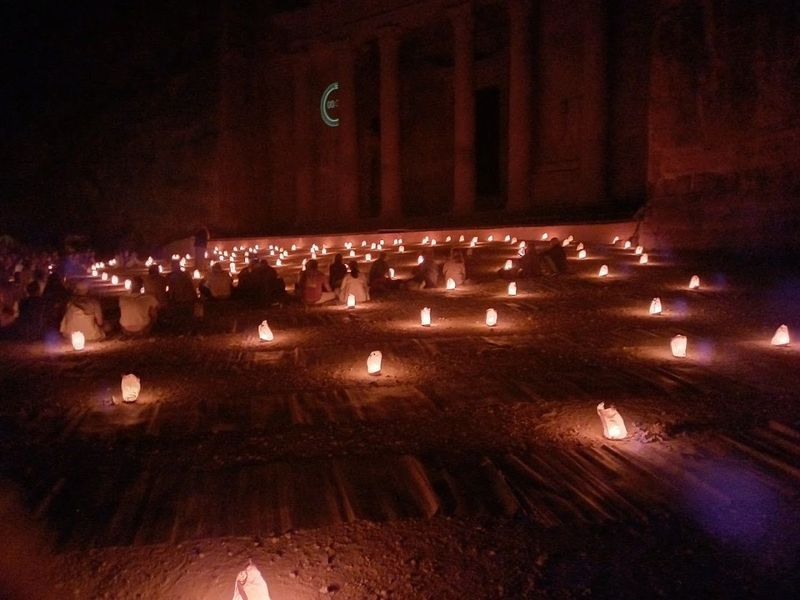
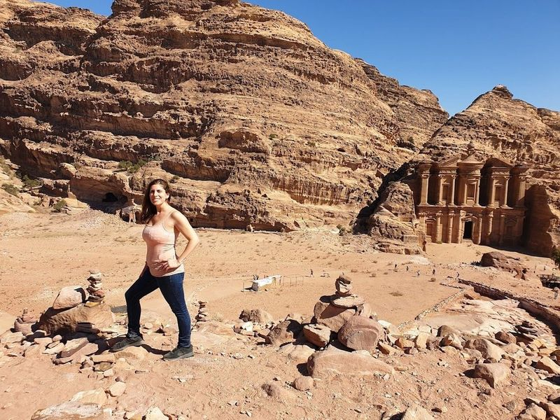
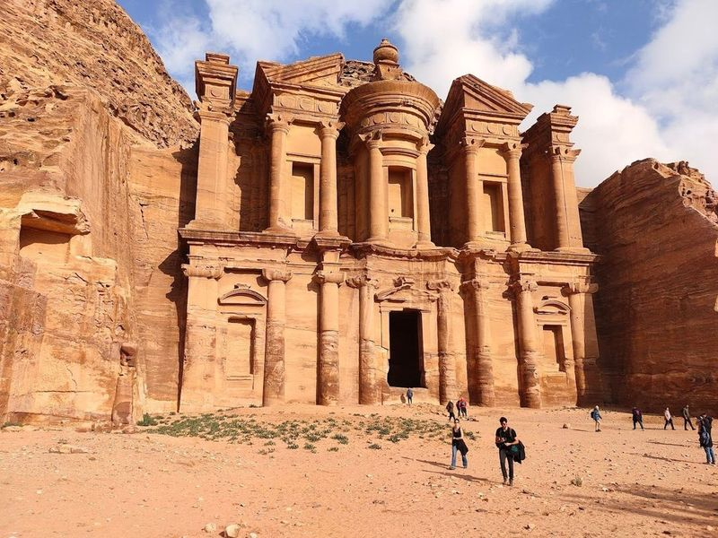
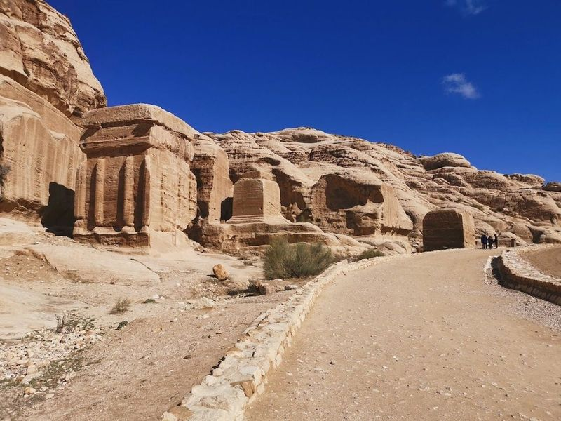
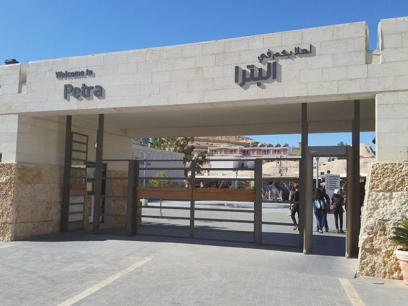
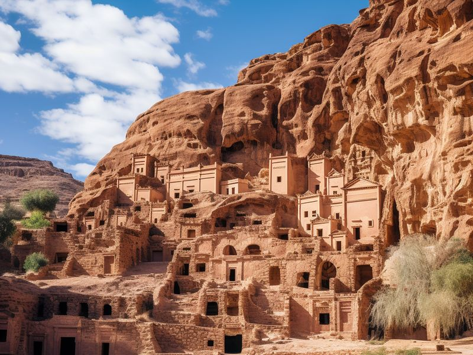
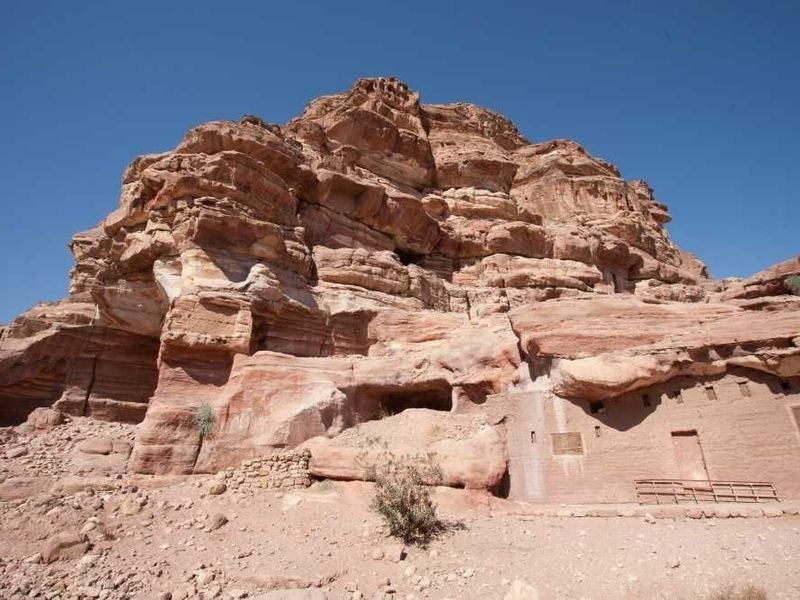
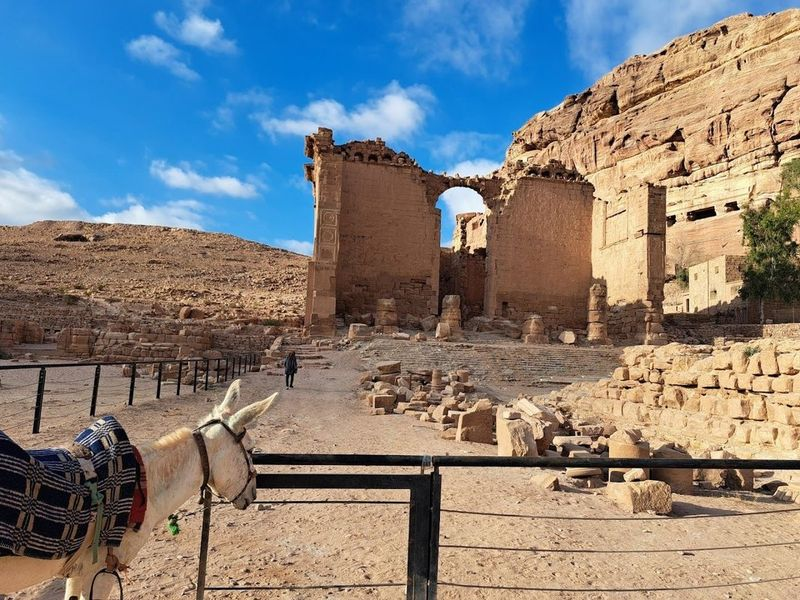
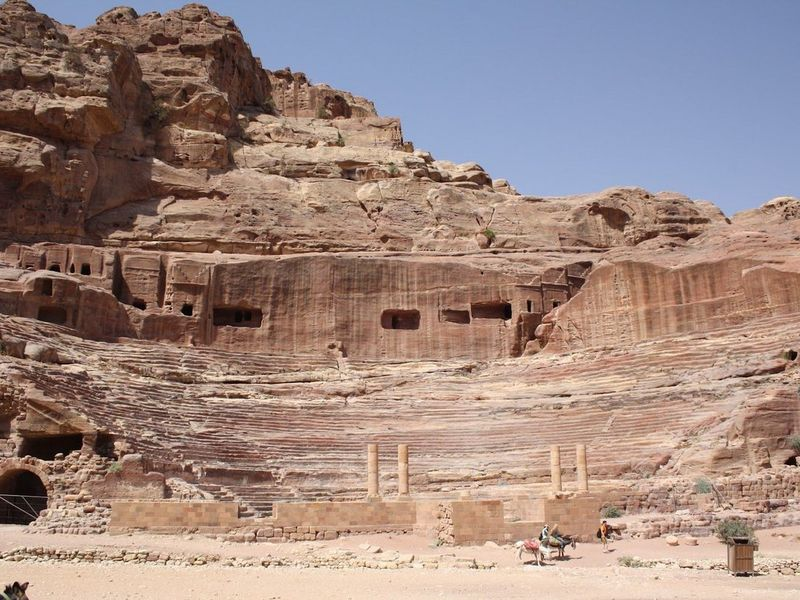
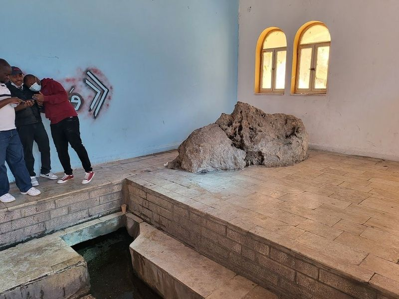

Explore Petra
A Brief History
Petra was the Nabataean capital carved into sandstone canyons from the fourth century BCE, controlling incense routes to the Red Sea. Treasury facades, theatre, and royal tombs record Hellenistic-Arab trade wealth before Roman annexation and later Byzantine and Islamic phases in the Wadi Musa valley. High-place hikes and Bedouin routes extend Nabataean tomb façades through sandstone ridges above Wadi Musa.
Attractions Map
Top Sights & Activities

Petra By Night
No visit to Petra is truly complete without experiencing the enchanting "Petra By Night." This captivating event transforms the ancient city into a dreamlike landscape, as thousands of candles flicker in the darkness, casting a warm glow over its historic structures. Underneath a canopy of stars, be immersed in an atmosphere that feels both surreal and magical.

AlDayr
The Monastery, also known as Ad Deir, is a remarkable rock monastery and spiritual site that dates back to 3 B.C. It is a monumental Nabataean tomb located in Petra. The hike to reach the Monastery is quite challenging but definitely worth it for the view it offers. The facade of the Monastery, carved into the sandstone mountain, leaves visitors speechless with its grandeur.

The Treasury
The Treasury, also known as the rock-carved temple, is a remarkable site located in Petra, Jordan. This elaborate facade is believed to have been a mausoleum for the Nabataean King Aretas III around 100 BCE to 200 CE. The Hellenistic craftsmanship of the Treasury's facade is truly astonishing and has captivated visitors for centuries. It has gained international fame, particularly due to its appearance in the Indiana Jones movie 'The Last Crusade.'.

Al-Siq
Al-Siq, a 1.2km narrow canyon in Petra, Jordan, is a mesmerizing natural passage leading visitors through red-rock walls towards the hidden city. This magical corridor holds spiritual significance and offers an experience as it snakes its way to the ancient city. Walking through Al-Siq feels like stepping back in time, surrounded by history and impressive rock formations.

Petra Visitor Center
The Petra Visitor Center is the starting point for exploring the main archaeological site of Petra. Visitors can obtain tickets, guides, and information here before embarking on a guided tour through the ancient city. The tour includes a walk through little Petra back roads, viewing ancient agricultural facilities and water basins.

Petra
Petra, a renowned historical site, offers the Petra Monastery trail, which is a for visitors. The 45-minute walk to the Monastery provides views and is just the beginning of what Petra has to offer. Exploring this massive site can take several days, with popular spots like The Treasury and the Monastery connected by a challenging 3-mile hike.

Great Temple
The Great Temple is an archaeological wonder located in Petra, covering a vast area of 76,000 sq. ft. Entrance to the site is through a narrow tunnel called Siq, which leads to the red temple carved out of multicolored cliffs. The ruins of ancient city and amphitheater along with dwellings carved out of cliffs offer much to explore in this historical landmark that has stood the test of time.

Qasr al-Bint - Temple of Dushara
Qasr al-Bint is a significant part of the Petra complex, featuring temple remains with floral reliefs and columns. Visitors can explore other nearby attractions such as The Monastery, Temple of Dushares, and Renaissance Tomb. The area also offers opportunities to observe archaeologists at work preserving the ruins. Additionally, there are old Nabatean baths, a museum, and a restaurant for visitors to enjoy.

Nabatean Theatre
If you're looking for an adventure in the heart of the Middle East, look no further than Go Jordan Travel and Tourism. This fantastic agency offers a range of tours that showcase the beauty and rich history of Jordan. Travelers have shared their experiences, highlighting how even a short four-day trip can leave you with lifelong memories.

Mousa's Spring
Mousa's Spring, also known as Ain Musa, is a historical site situated in Wadi Musa, Jordan. The spring is housed within a distinctive building near the town's exit and has been providing drinking water to people for millennia. While there are no entry fees and it's not usually crowded, some visitors hope for better maintenance to enhance the overall experience. The cold and refreshing spring water has been tested and confirmed as drinkable with rich mineral content.